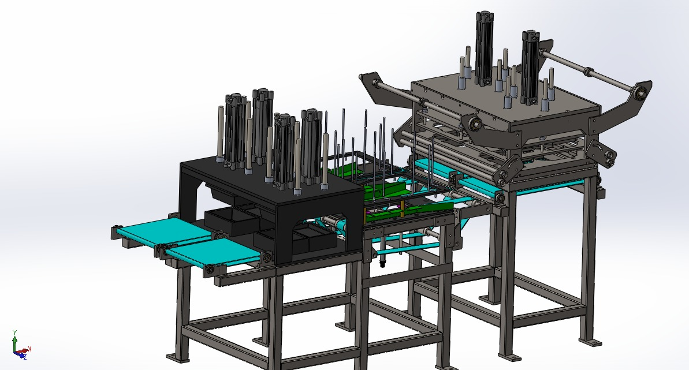
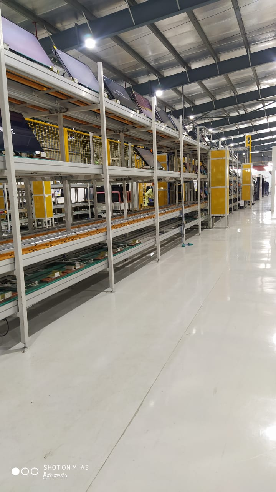
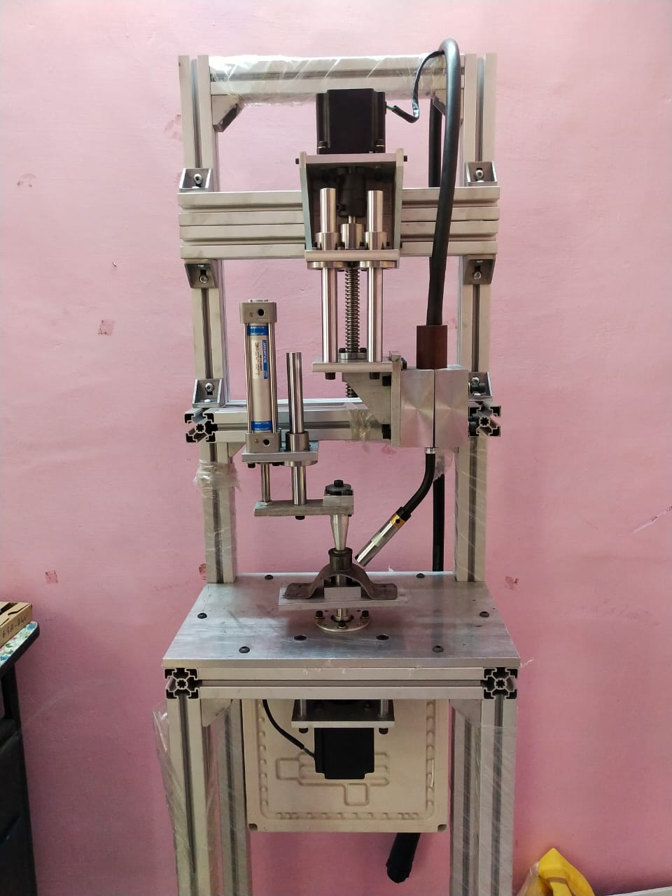

Representative Build
Special Purpose Machines And Automation
We design and manufacture custom machines, conveyors, fabrication systems, and automation solutions for industrial teams that need dependable engineering, disciplined execution, and production-ready output.


These examples show delivered capability, not the full extent of what ERK can engineer.
Execution Model
We review the operation, output target, part flow, and real production constraints before design starts.
Mechanical structure, process mechanism, fabrication, and machine assembly are developed as one coordinated build.
We run the system, refine the performance, and deliver a machine that is ready for actual floor use.
What We Build
Custom-built systems engineered around a specific operation, cycle requirement, or manufacturing bottleneck.
Handling, transfer, and inspection setups for smoother product movement and more stable line-side quality control.
Mechanisms and automation sequences aligned to improve repeatability, throughput, and operator efficiency.
Fabricated frames, welded assemblies, fixtures, and special setups built for industrial durability and serviceability.
Engineering Depth
The current portfolio points clearly toward custom automation, process-specific machinery, conveyors, inspection systems, welding platforms, and production handling equipment. The showcased references are representative examples of delivered work, not an upper limit on what ERK can take on.

Machine concepts are grounded in specific plant-floor applications instead of broad manufacturing claims.
The current ERK portfolio clearly leans toward automation, conveying, welding systems, and custom process builds.
Selected Work
Purpose-built handling and machine structure developed for packaging-oriented product movement and station stability.
Inspection-focused conveyor design supporting clean flow, operator visibility, and in-line review.
Special purpose welding machine built for controlled joining and repeatable fixture-led fabrication.
Scroll Experience
Dynamic Pages
Each ERK asset can now open as its own immersive story page with a stronger visual identity, highlighted capabilities, engineering context, and related systems for deeper browsing.
Browse Dynamic PagesProject Stories
Engineering Showcase
These references are drawn from available ERK assets and presented as representative work. More machine types, systems, and production applications can be added as the portfolio expands.
Selected systems that communicate ERK's machine-building and automation capability at a glance.
Operational footage for technical review, process understanding, and machine behavior reference.
Structured galleries for faster review across machines, automation, fabrication, and project execution.
Why ERK
The machine names and project visuals point to actual use cases, not generic capability statements.
ERK's work shows a practical command of fabricated structures, moving systems, and production mechanisms.
Deburring, facing, punching, labeling, and welding suggest a team that understands floor-level process flow.
The current references establish credibility while leaving room to present a much wider future body of work.
Industries
Machine and conveyor builds for transfer, labeling, product presentation, and line-side packaging operations.
Systems supporting product movement, handling, and inspection where repeatability and pace both matter.
SPMs, fixtures, and machine structures for teams building repeatable processes around joining and fabrication.
Custom mechanical and line-side automation where off-the-shelf equipment is not enough for the task.
Build With ERK